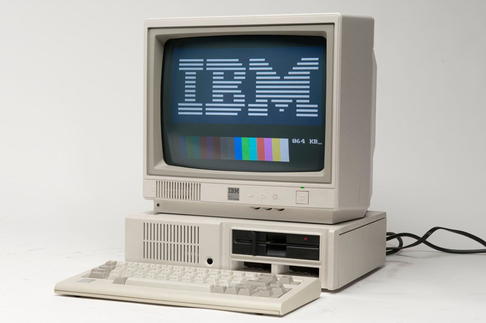

Якщо дуже коротко – всі основні проблеми 123 спеціальності ідеально формулюються одним реченням: На 123 погано вчать створювати обчислювальну техніку за технологіями минулого сторіччя.
Погано: через нестачу сучасних наочних посібників (нема або дуже мало електроніки/плат/процесорів, на яких можна було б наочно показати щось) і як наслідок – дивна навчальна програма, зрозуміти, навіщо потрібно все те, про що каже викладач – складно.
Створення обчислювальної техніки: 123 являє собою дивний симбіоз embedded (проектування усіляких систем розумного дому, смарт-годинників та розумних верстатів) зі створенням операційних систем та навіть суперкомп’ютерів. Реальність складніша: ринок ІТ в Україні на одну половину – це web-розробка, а на іншу – розробка додатків для мобільних платформ. І ще трохи різних компаній, що розробляють ігри, займаються data science та machine learning (крутими і незрозумілими словами), і лише 3 серйозні компанії, що займаються embedded. Тобто дисципліни, що вивчаються на 123, не зовсім актуальні для ринку праці в Україні.
Технології минулого сторіччя: приділяти увагу старим технологіям корисного хоча б для того, аби оцінити технічний прогрес. Проблема постає тоді, коли виявляється, що сучасним технологіям приділяється напрочуд мало уваги. В сфері обчислювальної техніки, що брухливо розвивається, це взагалі злочин. Навіть те, що вивчається тут, застосовується в реальній "роботі за фахом" з багатьма зауваженнями.
Тож, резюмуючи коротку частину статті:
Ти й досі тут? Що ж, тобі явно не бракує бажання в усьому розібратися. Комп'ютерна інженерія любить таких. Тож спеціально для тебе – більш детальний аналіз, що ж тут відбувається. Що таке комп'ютерна інженерія взагалі? Що я буду вивчати? Що доведеться вчити самому? Чи знайду я роботу? Якщо так, то яку? Як пояснити мамі, куди вона відправдяє мене на 4 роки? Чи варті ці 4 роки витрачених зусіль і 200 балів ЗНО?
Колись, коли трава була зеленіша, повітря – чистішим, а радянський союз – цілішим, була Золота Епоха Комп’ютерів. Існувало багато різних виробників комп'ютерів, що випускали унікальні та неповторні апарати. Не було материнських плат у тому розумінні, у якому ми маємо їх зараз. Не було ні USB, ні VGA, ні HDD. Комп’ютери відрізнялись між собою украй серйозно. Купівля комп’ютеру нагадувала купівлю автомобілю: тобі необхідно було точно знати перелік завдань, які твоя машина мала розв’язувати, і ти підбирав існуючі моделі автомобілів під свої уподобання і потреби. Як вантажівка може бути зайвою для простої щоденної поїздки на роботу/додому, так само і якийсь комп’ютер значно більше підходив до розв’язування якогось переліку завдань. Наприклад, для того, аби розв’язувати економічні задачі необхідно було купляти спеціальний комп’ютер, що мав окремий сопроцесор для дій з числами з комою. Комп’ютери неймовірно відрізнялись між собою і проектувались під певні задачі.
Що означає зібрати комп’ютер сьогодні? Якщо перед Вами встає така задача – Ви йдете у спеціалізований магазин, де купляєте собі оперативну пам’ять, HDD побільше, відеокарту новішу тощо. Проблем з поєднанням усіх цих компонентів можуть виникнути лише при пошуку блоку живлення, який буде достатньо потужним для коректної роботи усіх компонентів. Запорука такої універсальності та легкості – довга історія, у якій зав'язана поява Windows, союз Microsoft та Intel, їх перемога на ринку персональних комп'ютерів, розроблені AMD клони процесорів Intel, і ще купа чого, що виходить за рамки цієї статті.
У 60-ті ж роки, коли була заснована кафедра ОТ, ринок персональних комп'ютерів був схожим на Дикій Захід – власні процесори з унікальними і не узгодженими ні з ким технологіями та принципами роботи випускали Yamaha, Samsung, Zilog, LG, Toshiba, Hitachi, MOS Technology… Всі хотіли урвати свою частину ринку, створюючи різні комп’ютери з різними принципами роботи і з різними вимогами до різної периферії. Ситуація, за якої написаний для одного комп'ютера калькулятор не міг навіть теоритично працювати на іншому, вже не кажучи про операційні системи та офісні пакети, була реальністю. Але часи змінювались, комп'ютеризація набувала обертів, і бізнес поставив свої умови – "хочу як у конкурентів", "хочу зручно і швидко", "не хочу купляти цілий комп'ютер лише для того, аби читати дискети" загубило розмаїття унікальних платформ. Шляхом природнього відбору модульність, взаємозамінність, стандарти інтерфейсів взаємодії перемогли над ентузіазмом "розробити свій велосипед".
Зібрати комп’ютер у ті ж 80-ті означало вирішити купу задач: від розробки власної клавіатури – до урахування напруги на різних частинах схеми. При купівлі комп'ютеру деякі виробники пропонували покупцю монтажну плату зі шматка текстоліту, процесор і мікросхему головної пам’яті, яка вміщувала у себе 4КБайт-ний «драйвер» клавіатури і виводу на екран (яким тоді часто слугував звичайний телевізор). До цього набору додавався повний перелік деталей, за якими ти мав купляти набір резисторів і конденсаторів, і монтажна схема, до якої ти все це припаював. Для того, аби навіть зібрати комп’ютер "з нуля", не кажучи вже про розробку програмного забезпечення для нього, маючи лише компоненти без будь-яких схем, були необхідні комплексні і ґрунтовні знання. Зараз ситуація кардинально інша, і замінити оперативну плату можна без паяльника і знань, як оперативна пам’ять працює.

Комп'ютерна інженерія як галузь присвячена комплексному вивченню принципів роботи і побудови обчислювальної техніки з нуля – з рівня фізики та принципів роботи транзисторів, крізь рівень логічних абстракцій роботи процесору, через його створення і програмування на ньому, до розробки операційної системи спеціально під цей процесор.
Трохи не те, що уявляєш собі, коли хочеш працювати «айтішником».
Про те, як саме реалізована комп'ютерна інженерія на ФІОТі можна прочитати в наступній частині.
Оглянемо освітню програму. Знайдемо на сайті кафедри відповідний розділ, де можна переглянути усі предмети. Ігноруємо предмети, які не є унікальними для цієї кафедри (тобто Вища математика, Аналітична геометрія, Фізика) і зосередимо увагу на тому, що мали б допомогти для успішного виконання цілей, що описані в попередньому розділі – «що допоможе розробити новий комп’ютер з нуля?»
Головний недолік – на початку курсу багатьом студентам, що вступили сюди, не пояснюється, що тут до чого.
Уявимо ситуацію – хтось захопився живописом і захотів навчитися малювати. Спочатку усілякі різні речі по типу перспективи, фактури, правильного підбору кольору, симетрії здаються йому не зовсім необхідними – і виходить казна-що, або ж живопис постмодерну. І лиш намагаючись досягти гарного результату, цей хтось починає розуміти, навіщо художнику знати анатомію, теорію кольору, світлотіні і навіть трохи фізики. Цей хтось починає розуміти, навіщо потрібні ці дисципліни, оскільки він йде згори вниз, з результату до навичок, що результат вимагає. Будується «roadmap». Спочатку виникає мета подорожі, а потім – шлях до неї. Що є логічним.
123 йде знизу вверх, враховуючи те, що більшості студентів верх не особливо цікавий. Багато хто хотів "навчитись програмувати", а не будувати комп'ютери чи розробляти операційні системи. Нічого поганого у бажанні мати гроші не має. Ніхто не звинувачує читача у тому, що він хоче нормально заробляти. Ніхто не звинувачує й керівництво кафедри і її викладачів, що за нинішніх умов і стану освіти в країні вимушені просто працювати попри все. Вина, скоріше, на нерозвиненій системі профорієнтації, на нестатку інформації, що доступні абітурієнту. Саме це і мета даного циклу статей – дати зрозуміти, що ж являє собою ця спеціальність. Але повернемось до теми.
Оглянемо предмети, що вирізняють 123 спецільність з проміж інших на ФІОТі.
Позитивні зрушення є, але їх поки недостатньо. Навчальній програмі треба ще рік-два активної модернізації і адаптації до сучасних методів, але початок вже покладено.
А що з програмуванням? Тут же ж вчать на програмістів?..
Не все так просто. Проблема у тому, що десь на півшляху до оновлення освітньої програми на кафедрі реформи призупинились, і реформованими виявилась лише частина, присвячена програмуванню і загальній підготовці. Що зробило ситуацію ще гіршою, а програмування на 123 – ще більш відірваним від комп’ютерної інженерії. Якщо хоч якось і зможеш зробити систему розумного дому – то запрограмувати її не зможеш, бо не викладається С++. Через це усі названі в минулій статті предмети здаються такими, що не заслуговують належної до себе уваги. Навіщо мені вивчати якісь старі ПЛІСи, якщо можна витрати час на щось нове, щось, що можна використати у сучасній розробці?
На Основах Програмування розглядається Python – одна з найпопулярніших мов програмування у сьогоденні, одна з найбільш затребуваних мов на ІТ-ринку України, доволі гарна мова для ознайомленнями з базовими концепціями програмування, але до програмування мікроконтролерів не має жодного відношення.
Викладається Об’єктно-Орієнтовне Програмування, де вивчають Java – щоправда, цей предмет триває лише 1 семестр. Java відома своєю кросплатформенністю і дуже зручна при розробці програм абсолютно будь-якої направленості, але знову ж таки, не для програмування мікроконтролерів.
Головна особливість цих мов програмування – вони позбавлені аспекту безпосереднього керування комп’ютером та взаємодії з його архітектурою. Вони влаштовані так, аби максимально абстрагувати програміста від особливостей платформи, для якої він програмує. І якщо для розробки бізнес-програм чи застосунків для мобільного телефону це неймовірна перевага, на них неможливо змусити миготіти певну лампочку чи написати драйвер для WI-FI-адаптеру.
З деякими дисциплінами ситуація ще гірша.
Паралельне Програмування 1 та 2 націлені на програмну реалізацію систем мультидії, пришвидшенню математичних обчислень (програми) за допомогою особливостей архітектури (апаратно). Це про те, як задіяти усі ядра процесору (так, ось для чого 2-х, 4-х та 8-ядерність)
Теорія комп'ютерних систем – це написання драйверів. Тут і так зрозуміло, це про те, як обробляти сигнали з мишки, WI-FI-адаптеру чи як надсилати сигнали на екран, хоча б 8-бітний дисплей.
Системи реального часу – знову ж таки, вельми корисна дисципліна при програмування мікроконтролерів, які слідкують за чимось та мають купу периферії, з якої отримують потік данних, який вимагає постійної обробки.
Системне програмування 2 та 3 націлені на реалізацію високорівневих мов програмування для певної платформи – як змусити Java працювати на будь-якому процесорі та чи варто цим взагалі займатися, що знову ж таки вимагає знань архітектури та мови програмування, що здатна з нею взаємодіяти. Знову ж референс у сторону С++.
Через це частини освітньої програми здаються ще більш відірваними одне від одних. Освітній програмі не вистачає зорієнтованості на конкретній сфері, аби стати вузькопрофільною, водночас, не вистачає і синхронності, цілістності, аби мати право називати себе «базовою», «базисом». Надто відрізняється рівень викладання різних частин. Тому багато студентів розчаровуються у програмі і самостійно вивчають технології, що потрібні на ринку праці. Але про нього – у наступній частині.
Забити на «електроніку і оці всі комплогіки» остаточно на 123 не вийде – кафедра пишається своєю непрограмістською підготовкою, і викладачі з цих предметів украй вимогливі. Головне – не скиглити, що «це все непотрібно», ти тепер знаєш, на що йшов.
Навчання на 123 поєднується з роботою складніше, ніж на інших кафедрах – виною тому є не лише специфічні предмети (складно одночасно вивчати те, що треба ринку, і те, що треба університету), а й скептичне ставлення більшості викладачів до пропуску їх занять.
За бажання доторкнутися до світу сучасного embedded можна в відкритій лабораторії Lampa, що була створена силами студентів. Великі компанії часто дарують їй обладнання, тож якщо шукав місце, де можна протестувати останню розробку – ласкаво просимо.
Багато з дисциплін, що вивчаються тут, мають на меті детальне вивчення механізмів роботи. Навчаючись тут, можна зацікавитись тим, як все працює «під капотом» – знання, які дуже важливі під час зростання по кар’єрних сходах. Хоча заробляти 3000$/наносекунду зі старту вони не допоможуть, так.
За предметами, що викладаються тут, роботу знайти важко. Хтось скаже, що університет не має навчити тебе заробляти гроші. Так, але якщо у ньому не можна навчитися ні заробляти грошей, ні отримати грунтовні знання, ні навіть базисні – для чого він взагалі потрібен?..
Зауваження про те, що на 123 вчать «застарілий непотріб» абсолютно безглузді. Може й застарілий, але точно не "непотріб". Більшість нарікань про 123 виходять з того, що ніхто просто не знає, що від неї очікувати. Всі думають, що всі спеціальності на ФІОТі однакові, і що «тут вчать на айтішника», і через це мають нездійснені очікування. Очікують, що їх тут "навчатимуть на програміста", а отримують синтез електроніки, embedded та інформатики. Комп'ютерна інженерія – для інших задач. Вона створювалась з іншою метою і для інших потреб. Але мало хто це розуміє…
Сподіваюсь, Шановний Читач тепер це розуміє. І зробить свій, власний та зважений вибір. Дякуємо за прочитання данного циклу статей.